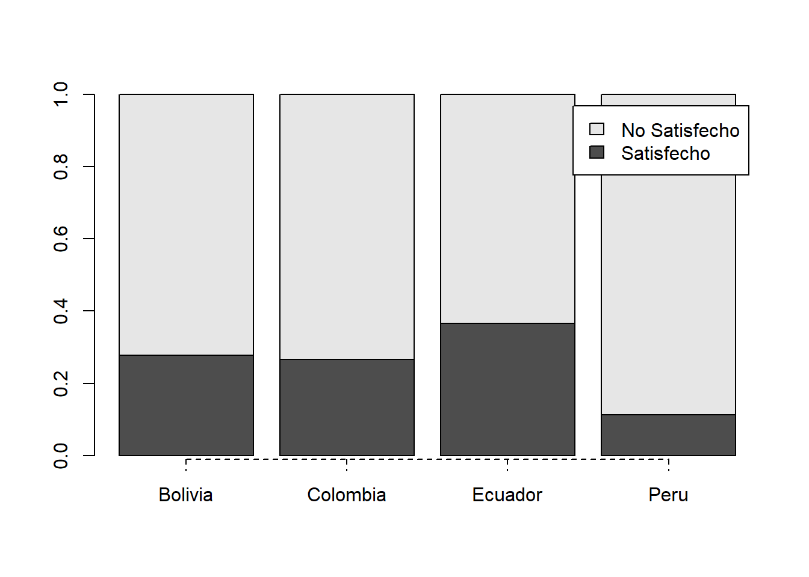

#getwd()
#setwd("")
#dir()
library(rio)
dfbaro <-import("./data/s7/b-Latinobarometro_2018_Esp_Spss_v20190303.sav")
#names(dfbaro)
#str(dfbaro)
#class(dfbaro) 7 ANALISIS DE VARIABLES CATEGORICAS
- Co-author: Luis Valverde
7.1 SELECCIONAR (un subconjunto de la) DATA <- funcion subset
- Subsetear data:
dfbaro = subset(dfbaro, IDENPA == 68 | IDENPA == 170 | IDENPA == 604 | IDENPA == 218)
table(dfbaro$IDENPA) # | <- signfica o
68 170 218 604
1200 1200 1200 1200 - Recodificar (cambiar los valores) numeros por paises
library(car)
dfbaro$pais <- recode(dfbaro$IDENPA, "68 = 'Bolivia'; 170 = 'Colombia'; 604 = 'Peru'; 218 = 'Ecuador'")
table(dfbaro$pais)
Bolivia Colombia Ecuador Peru
1200 1200 1200 1200 7.2 Descripción de la base
- Sexo
dfbaro$SEXO = as.factor(dfbaro$SEXO)
levels(dfbaro$SEXO) = c("Hombre","Mujer")- Autoubicación en escala de pobreza-riqueza: Personal
dfbaro$pobr_riq = as.numeric(dfbaro$P10STC.A)- En términos generales ¿Diría usted que (PAÍS) está gobernado por unos cuantos grupos poderosos en su propio beneficio, o que está gobernado para el bien de todo el pueblo? (ESPERE RESPUESTA Y MARQUE UNA SOLA)
dfbaro$pode_pueblo = as.factor(dfbaro$P14ST)
levels(dfbaro$pode_pueblo) = c("Poderosos","Pueblo")- ¿Y en los próximos doce meses, cree que su situación económica y la de su familia será mucho mejor, un poco mejor, igual, un poco peor, o mucho peor qu e la que tiene hoy? (ORDINAL) 5 Mucho peor / 1 Mucho mejor
dfbaro$situ_eco = as.factor(dfbaro$P9STGBSC)
levels(dfbaro$situ_eco) = c("Mucho mejor", "Un poco mejor", "Igual", "Un poco peor", "Mucho peor")- ¿Diría Ud. que este país… progresado 1, estancado 2, esta retroceso 3?
dfbaro$pais_pro = as.factor(dfbaro$P2STC)
dfbaro$pais_pro = factor(dfbaro$pais_pro,
levels = levels(dfbaro$pais_pro),
labels = c("Progreso","Estancado","Retrocedio"),
ordered = T)
table(dfbaro$pais_pro)
Progreso Estancado Retrocedio
1336 2375 948 En general, ¿Diría Ud. que está muy satisfecho, más bien satisfecho, no muy satisfecho o nada satisfecho con el funcionamiento de la democracia en (PAÍS)? -> 4 niveles: muy satisfecho, mas bien satisfecho, no muy satisfecho, nada satisfecho
En este caso pasaremos de 4 niveles a 2:
library(car)
table(dfbaro$P13STGBS.A)
1 2 3 4
271 899 2383 1015 dfbaro$satis_democracia = as.factor(dfbaro$P13STGBS.A)
dfbaro$satis_democracia <- recode(dfbaro$P13STGBS.A, "1:2 = 1; 3:4 =2")
table(dfbaro$satis_democracia)
1 2
1170 3398 dfbaro$satis_democracia = as.factor(dfbaro$satis_democracia)
levels(dfbaro$satis_democracia) = c("Satisfecho","No Satisfecho")
table(dfbaro$satis_democracia)
Satisfecho No Satisfecho
1170 3398 - ¿Cuán justa cree Ud. que es la distribución del ingreso en (PAÍS)?
str(dfbaro$P23ST) num [1:4800] 1 3 3 3 4 2 2 NA 3 3 ...dfbaro$justo = as.factor(dfbaro$P23ST)
levels(dfbaro$justo) = c("Muy justa","Justa","Injusta","Muy injusta")7.3 DESCRIPCIÓN DE VARIABLES
- Calcular las tablas de frecuencias y de frecuencias acumuladas en porcentajes (variables categoricas)
library(jmv) # Para calcular tablas
descriptives(dfbaro, vars = vars(justo, pode_pueblo, pobr_riq, situ_eco, pais_pro, satis_democracia), freq = TRUE)
DESCRIPTIVES
Descriptives
──────────────────────────────────────────────────────────────────────────────────────────────────────
justo pode_pueblo pobr_riq situ_eco pais_pro satis_democracia
──────────────────────────────────────────────────────────────────────────────────────────────────────
N 4588 4623 4752 4562 4659 4568
Missing 212 177 48 238 141 232
Mean 4.258628
Median 5.000000
Standard deviation 1.880180
Minimum 1.000000
Maximum 10.00000
──────────────────────────────────────────────────────────────────────────────────────────────────────
FREQUENCIES
Frequencies of justo
───────────────────────────────────────────────────────
justo Counts % of Total Cumulative %
───────────────────────────────────────────────────────
Muy justa 81 1.76548 1.76548
Justa 916 19.96513 21.73060
Injusta 2500 54.48997 76.22058
Muy injusta 1091 23.77942 100.00000
───────────────────────────────────────────────────────
Frequencies of pode_pueblo
───────────────────────────────────────────────────────
pode_pueblo Counts % of Total Cumulative %
───────────────────────────────────────────────────────
Poderosos 3693 79.88319 79.88319
Pueblo 930 20.11681 100.00000
───────────────────────────────────────────────────────
Frequencies of situ_eco
─────────────────────────────────────────────────────────
situ_eco Counts % of Total Cumulative %
─────────────────────────────────────────────────────────
Mucho mejor 663 14.53310 14.53310
Un poco mejor 1647 36.10259 50.63569
Igual 1662 36.43139 87.06708
Un poco peor 433 9.49145 96.55853
Mucho peor 157 3.44147 100.00000
─────────────────────────────────────────────────────────
Frequencies of pais_pro
──────────────────────────────────────────────────────
pais_pro Counts % of Total Cumulative %
──────────────────────────────────────────────────────
Progreso 1336 28.67568 28.67568
Estancado 2375 50.97660 79.65229
Retrocedio 948 20.34771 100.00000
──────────────────────────────────────────────────────
Frequencies of satis_democracia
────────────────────────────────────────────────────────────
satis_democracia Counts % of Total Cumulative %
────────────────────────────────────────────────────────────
Satisfecho 1170 25.61296 25.61296
No Satisfecho 3398 74.38704 100.00000
──────────────────────────────────────────────────────────── 7.4 TABLA DE CONTINGENCIA
UNIDAD DE ANALISIS: Personas entrevistadas
- Para obtener las frecuencias observadas, solo con la funcion table
table(dfbaro$pais, dfbaro$satis_democracia) #tabla cruzada
Satisfecho No Satisfecho
Bolivia 314 816
Colombia 304 841
Ecuador 426 740
Peru 126 1001- Totales marginales: de filas y columnas
addmargins(table(dfbaro$pais, dfbaro$satis_democracia))
Satisfecho No Satisfecho Sum
Bolivia 314 816 1130
Colombia 304 841 1145
Ecuador 426 740 1166
Peru 126 1001 1127
Sum 1170 3398 4568- Total general de esta tabla: 4568
7.5 Distribución conjunta: Porcentaje en relación al total general
- Bolivia & Satisfechos = 314/4568 = 0.068
prop.table(table(dfbaro$pais, dfbaro$satis_democracia)) # Para obetner las proporciones
Satisfecho No Satisfecho
Bolivia 0.06873905 0.17863398
Colombia 0.06654991 0.18410683
Ecuador 0.09325744 0.16199650
Peru 0.02758319 0.219133107.6 Distribución Marginal: Porcentaje en relación al total de las filas
prop.table(table(dfbaro$pais, dfbaro$satis_democracia), 1)
Satisfecho No Satisfecho
Bolivia 0.2778761 0.7221239
Colombia 0.2655022 0.7344978
Ecuador 0.3653516 0.6346484
Peru 0.1118012 0.8881988Los peruanos están mas insatisfechos con la democracia 88%
Porcentaje en relación al total de las columnas
prop.table(table(dfbaro$pais, dfbaro$satis_democracia), 2)
Satisfecho No Satisfecho
Bolivia 0.2683761 0.2401413
Colombia 0.2598291 0.2474985
Ecuador 0.3641026 0.2177752
Peru 0.1076923 0.2945851# Otro modo de ver, cambiando el lugar de las variables:
prop.table(table(dfbaro$satis_democracia, dfbaro$pais), 2)
Bolivia Colombia Ecuador Peru
Satisfecho 0.2778761 0.2655022 0.3653516 0.1118012
No Satisfecho 0.7221239 0.7344978 0.6346484 0.8881988- Del total de personas satisfechas con la democracia, los mas satisfechos son los ecuatorianos 36%.
7.7 GRÁFICO
cuadro = prop.table(table(dfbaro$satis_democracia,
dfbaro$pais), 2)
barplot(cuadro, legend = rownames(cuadro), axis.lty = 2)
8 FRECUENCIAS ESPERADAS
- Para esto, necesitamos calcular la prueba chi cuadrado + $expected
table(dfbaro$satis_democracia, dfbaro$pais)
Bolivia Colombia Ecuador Peru
Satisfecho 314 304 426 126
No Satisfecho 816 841 740 1001- CHI CUADRADO: frecuencias esperadas (si la distribicion es proporcional entre las casillas: si no habria ninguna relacion entre la satisfaccion de la democracia y el pais de procedencia.
tablaFesperadas <- chisq.test(dfbaro$satis_democracia, dfbaro$pais)$expected
tablaFesperadas dfbaro$pais
dfbaro$satis_democracia Bolivia Colombia Ecuador Peru
Satisfecho 289.4264 293.2684 298.6471 288.6581
No Satisfecho 840.5736 851.7316 867.3529 838.34198.1 CHI CUADRADO
grados de libertad = (filas-1)(columnas-1) grados de libertad = (2-1)(4-1) grados de libertad = 3
# Con la funcion qchisq se indica el nivel de confianza y el numeros de los grados de libertad (df) para obetener el chi cuadrado teorico:
qchisq(0.95, 3) # Valor de la tabla[1] 7.814728- Ahora sí con CHI CUADRADO
chisq.test(dfbaro$pais, dfbaro$satis_democracia)
Pearson's Chi-squared test
data: dfbaro$pais and dfbaro$satis_democracia
X-squared = 199.56, df = 3, p-value < 2.2e-16El chi cuadrado observado es 199.56.
Grados de libertad (df) = 3
hipotesis de la prueba chi cuadrado:
H0: NO HAY ASOCIACIÓN ENTRE LA SATISFACCIÓN DE LA DEMOCRACIA Y EL PAÍS. / LAS VARIABLES SON INDEPENDIENTES.
P-VALOR = 0.00000000000000022 (< 2.2e-16). Por tanto, Rechazo la hipotesis nula. a um 95% del nivel de confianza Si es posible una relación entre la satisfacción de la democracia y el país de procedencia.
- Entonces, si sale significativo: Lo que sigue son dos casos para dos variables categoricas.
9 CASO 1: MEDIDAS DE ASOCIACIÓN PARA AL MENOS UNA VARIABLE NOMINAL
- En este caso solo mediremos intensidad
MEDIDAS SIMETRICAS
¿Existe o no relacion entre el pais y su satisfaccion con la democracia?
cuadro = table(dfbaro$satis_democracia, dfbaro$pais)
#install.packages("vcd")
library(vcd)
assocstats(cuadro) # Calcula las medidas de asociacion X^2 df P(> X^2)
Likelihood Ratio 216.99 3 0
Pearson 199.56 3 0
Phi-Coefficient : NA
Contingency Coeff.: 0.205
Cramer's V : 0.209 - Contingency Coeff.: 0.205 <- el coeficiente de contingencia nos indica que es una relacion de intensidad debil.
MEDIDAS ASIMETRICAS
#install.packages("DescTools")
library(DescTools)
Phi(cuadro, conf.level = 0.95)[1] 0.2090112UncertCoef(cuadro, conf.level = 0.95) uc lwr.ci upr.ci
0.02429518 0.01824672 0.03034365 Lambda(cuadro, conf.level = 0.95) lambda lwr.ci upr.ci
0.05708661 0.03969189 0.07448134 - Advertimos que el lambda es debil. 0.057
- El (uc) coeficiente de incertidumbre es 0.024, tambien es debil
10 CASO 2: MEDIDAS DE ASOCIACIÓN PARA RELACIÓN ENTRE DOS VARIABLES ORDINALES
- En este caso mediremos intensidad y dirección
¿Existe o no relacion entre si se considera justa la distribucion de ingresos y el nivel de progreso del país?
table(dfbaro$justo,dfbaro$pais_pro)
Progreso Estancado Retrocedio
Muy justa 32 28 21
Justa 439 353 104
Injusta 615 1347 478
Muy injusta 196 561 308- Estadisticos marginales
tabla = prop.table(table(dfbaro$justo,dfbaro$pais_pro),1)*100
addmargins(tabla)
Progreso Estancado Retrocedio Sum
Muy justa 39.50617 34.56790 25.92593 100.00000
Justa 48.99554 39.39732 11.60714 100.00000
Injusta 25.20492 55.20492 19.59016 100.00000
Muy injusta 18.40376 52.67606 28.92019 100.00000
Sum 132.11038 181.84620 86.04342 400.00000- Chi2
cuadro2 = table(dfbaro$justo,dfbaro$pais_pro)
chisq.test(cuadro2)
Pearson's Chi-squared test
data: cuadro2
X-squared = 293.26, df = 6, p-value < 2.2e-16# Medidas de asociación para variables ordinales
GoodmanKruskalGamma(cuadro2, conf.level=0.95) gamma lwr.ci upr.ci
0.3208106 0.2796476 0.3619736 KendallTauB(cuadro2, conf.level=0.95) tau_b lwr.ci upr.ci
0.2005291 0.1740476 0.2270107 Segun el gamma esa relacion es media. En este caso la direccion es positiva. Es decir, las personas que consideran que el pais ha retrocedido, tambien consideran que la distribucion de ingresos es mas injusta. Las personas que consideran que el pais ha progresado más, tienden a pensar que la distribucion de ingresos es mas injusta.
En este caso nos interesa calcular el TauC, pues no es una matriz cuadrada.
StuartTauC(cuadro2, conf.level=0.95) tauc lwr.ci upr.ci
0.1839186 0.1593666 0.2084706 #Medidas asimetricas
cuadro2 = table(dfbaro$pais_pro, dfbaro$justo)
cuadro2
Muy justa Justa Injusta Muy injusta
Progreso 32 439 615 196
Estancado 28 353 1347 561
Retrocedio 21 104 478 308SomersDelta(cuadro2, direction = "row") #fila = variable dependiente #row reemplazar por col si es que la variable esta en columnas[1] 0.2020387-SomersDelta: 0.2020387. relacion directa y debil
- DIRECTA:
A medida que se cree que la distribución de ingresos es muy injusta, se considera que el país retrocedio.
A medida que se cree que la distribución de ingresos es muy justa, se considera que el país progreso
INTENSIDAD: BAJA 0 a 0.3 es relación baja.
Para una mejor compresion de la tabla:
prop.table(table(dfbaro$pais_pro, dfbaro$justo),1)*100 # En este caso por filas
Muy justa Justa Injusta Muy injusta
Progreso 2.496100 34.243370 47.971919 15.288612
Estancado 1.223242 15.421581 58.846658 24.508519
Retrocedio 2.305159 11.416026 52.469813 33.809001Los que consideran que el pais ha retorcedido, son los que consideran que la distribucion de ingresos es muy injusta. (33.809001)
Los que consideran que el pais se ha Estancado, son los que consideran que la distribucion de ingresos es Injusta. (58.846658 )
Los que consideran que el pais ha Progresado, son los que consideran que la distribucion de ingresos es injusta. (47.971919)
Ahora por columnas:
prop.table(table(dfbaro$pais_pro, dfbaro$justo),2)*100 # En este caso por filas
Muy justa Justa Injusta Muy injusta
Progreso 39.50617 48.99554 25.20492 18.40376
Estancado 34.56790 39.39732 55.20492 52.67606
Retrocedio 25.92593 11.60714 19.59016 28.92019Los que consideran que el pais ha Progresado, son los que consideran que la distribucion de ingresos es muy justa. (39.50617 ). Del mismo modo con justa (48.99554)
Los que consideran que el pais se ha Estancado, son los que consideran que la distribucion de ingresos es muy injusta. (52.67606). Del mismo modo con Injusta(55.20492)